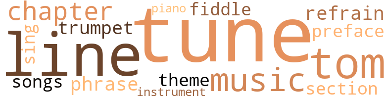
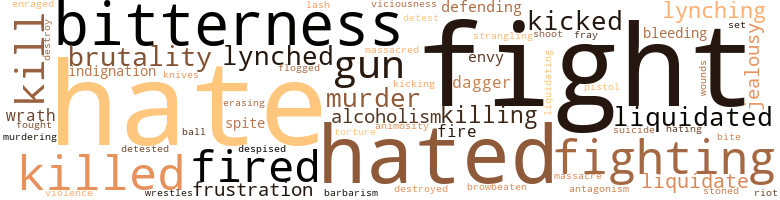
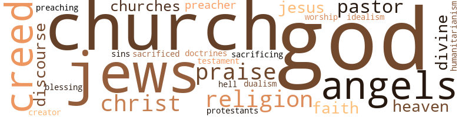

Letters to My Son, by Jenkins, Deaderick Franklin (1947)
26 music-related terms matched in this text.
Most frequent terms in this topic: tune (5); lines (2); line (2); music (2); tom-toms (2)
chapter.n.01
Definition: a subdivision of a written work; usually numbered and titled
| word | sentence |
|---|---|
| chapter | In closing this chapter of this letter I wish to do so by giving you a few examples of the types of people you will have to be on a lookout for and guard against , in case you choose Civil Service - and if you do n't you will need to know them wherever you go . |
| chapters | Her story , like all others I have told you about in preceding chapters , has a meaning in it for you . |
cornet.n.01
Definition: a brass musical instrument with a brilliant tone; has a narrow tube and a flared bell and is played by means of valves
| word | sentence |
|---|---|
| trumpet | I have n't the time to waste with sentimental fools who ask for the loud trumpet at every turn in the road . |
foreword.n.01
Definition: a short introductory essay preceding the text of a book
| word | sentence |
|---|---|
| preface | In my preface ( towards the end ) I thought I made that clear . |
music.n.01
Definition: an artistic form of auditory communication incorporating instrumental or vocal tones in a structured and continuous manner
| word | sentence |
|---|---|
| music | It was destined to be peopled by Negro orchestra leaders who often thought that making a lot of loud noise was what really constituted music , and by Negro ■ ' movie stars " who sacrificed their race for Hollywood gold . |
| music | In music , art , literature and religion it ran rampant . |
musical_instrument.n.01
Definition: any of various devices or contrivances that can be used to produce musical tones or sounds
| word | sentence |
|---|---|
| instrument | Creation has designed man as only a puppet , a tool or instrument of some greater force and except for the therapeutic value his struggling does not amount to a tinker 's damn . |
phrase.n.02
Definition: a short musical passage
| word | sentence |
|---|---|
| phrase | After a few minutes of thinking the matter over I agreed that such a thing at the moment would be unobtainable for reasons not due to rotor alone so I had the ad lady to phrase my ad to read something like this : " Young colored man just from the South wants job as cook in home of small family . |
piano.n.01
Definition: a keyboard instrument that is played by depressing keys that cause hammers to strike tuned strings and produce sounds
| word | sentence |
|---|---|
| piano | As far as I can remember it ran something like this : If you can get a furnished ( completely ) bedroom , living room , dining room , kitchen , bath room and conveniences , light , gas , water , ironing , telephone , piano and complete ( average ) musical library , refrigeration , unlimited use of radios ( one ours ) and plenty of electricity for yours - and many other things too numerous to mention - one of which is resupplying of broken knives , dishes , double boilers , wornout pots - which were misused for mixing bowls thus they were bent , handles pulled and bent off when crocks were available for this purpose - then too bedding and linens all supplied . |
refrain.n.01
Definition: the part of a song where a soloist is joined by a group of singers
| word | sentence |
|---|---|
| refrain | I want you to understand , somewhat the forces at work in the world today - all telling us the same thing , playing us the same refrain , the same tune , even the same one note , which is - that the human race is n't worth a damn . |
section.n.01
Definition: a self-contained part of a larger composition (written or musical)
| word | sentence |
|---|---|
| section | I learned later it must have been a mistake for during the trip the white clean covers I had admired in the Negro section of the bus had been removed as it was discovered later that there had been a gross mistake , that white and cleanliness were not meant for Negroes ; and that the real reason for the slip up was that they had not expected any Negro passengers . |
sing.v.02
Definition: produce tones with the voice
| word | sentence |
|---|---|
| sing | I could not sing songs of Zion for I was in a strange land and I soon found their democratic jargon both painful and insulting . |
song.n.01
Definition: a short musical composition with words
| word | sentence |
|---|---|
| songs | I could not sing songs of Zion for I was in a strange land and I soon found their democratic jargon both painful and insulting . |
tenor_drum.n.01
Definition: any of various drums with small heads
| word | sentence |
|---|---|
| tom-toms | In it I could hear the beat beat of the tom-toms but tom-toms become tiresome after awhile . |
| tom-toms | In it I could hear the beat beat of the tom-toms but tom-toms become tiresome after awhile . |
theme.n.03
Definition: (music) melodic subject of a musical composition
| word | sentence |
|---|---|
| theme | Wo n't you apply your ability and your sparks of greatness to the right theme and carve yourself a stairway to the stars ? |
tune.n.01
Definition: a succession of notes forming a distinctive sequence
| word | sentence |
|---|---|
| tune | It is American history and the facts are stated in this letter at this time merely to tell you that conditions do change with our white folks and that by constantly working toward a goal in tune with the people some concessions can be won . |
| tune | I want you to understand , somewhat the forces at work in the world today - all telling us the same thing , playing us the same refrain , the same tune , even the same one note , which is - that the human race is n't worth a damn . |
| line | Though I hated Ruth for all the above I felt always that this Negro girl , by keeping white people in line , on the race issue , was actually fighting my battles , and I tolerated her . |
| lines | There had been authors before me who had written along similar lines , and even while my book was in the manuscript stage a young Negro about my own age authored a book which sold to white people as no other book by a Negro had done before , which of course made him rich , but the people , the Negro people , on a whole did not particularly like this book since the Negro again took a severe beating . |
| tune | Your mother and I had a short courtship , in tune with the time . |
| line | I met Jimmy standing in line waiting to file his application for a Civil Service job . |
| tune | Out of my world of pessimism and stark reality steps this one big ray of hope to all men , to wit : that man 's true worth lies not in man 's past or present goodness but in his ever present chance to do good in spite of his inherent or creative weakness , his bad start , his politics , his economics , his culture and his religion - if only he will get in tune with that which is good and wholesome ; but if he fails in this he ha3 only himself to blame for the hell which he creates for himself in his journey from the cradle to the grave . |
| lines | But I was too young and virile to think further along these lines . |
| tune | So in short for me there was really no chance with Negro business per se because of its vice and more than that Negro business had not learned the psychology in tune with a wide awake public . |
violin.n.01
Definition: bowed stringed instrument that is the highest member of the violin family; this instrument has four strings and a hollow body and an unfretted fingerboard and is played with a bow
| word | sentence |
|---|---|
| fiddle | I was the first to recognize the fallibility found in the things I was defending but I did not think my defense of the Negro 's right to live as a full citizen should play second fiddle to what faults the Negro may have . |
172 violence-related terms matched in this text.
Most frequent terms in this topic: fight (17); hate (16); hated (9); bitterness (8); killed (7)
affray.n.02
Definition: a noisy fight
| word | sentence |
|---|---|
| fray | There is also another type , the opposite end of the above type , who reach their destination as a result of coming out of a fray second best . |
alcoholism.n.01
Definition: habitual intoxication; prolonged and excessive intake of alcoholic drinks leading to a breakdown in health and an addiction to alcohol such that abrupt deprivation leads to severe withdrawal symptoms
| word | sentence |
|---|---|
| alcoholism | Mr. Cattlebum was also very much concerned about alcoholism and all phases of psychology , also in vogue . |
| Alcoholism | Alcoholism to him was strictly an individual 's fault while I held that alcoholism is a disease both of the individual and the society in which the individual lives . |
| alcoholism | Alcoholism to him was strictly an individual 's fault while I held that alcoholism is a disease both of the individual and the society in which the individual lives . |
animosity.n.01
Definition: a feeling of ill will arousing active hostility
| word | sentence |
|---|---|
| animosity | Life here despite its morbidness , its racial animosity somehow allows us some moments of happiness . |
bleeding.n.01
Definition: the flow of blood from a ruptured blood vessel
| word | sentence |
|---|---|
| bleeding | But I must hurry on for in a few minutes it will be time for the nurses to come again to dress my bleeding wounds . |
| bleeding | Mother had a good reason to fear Jack 's father as the Sunday before she had stood trembling when she saw him in company of the sheriff and several more white men , drag a Negro 's bleeding and bruised body by our house tied securely by a rope tied to the end of the sheriff 's car . |
brutality.n.02
Definition: a brutal barbarous savage act
| word | sentence |
|---|---|
| barbarism | To this white man and to all white men I answer that the book is a study in barbarism differing only ins degree from Hitler 's Europe or militarized Shintoism recently turned on us ; at Pearl Harbor and other places . |
choking.n.02
Definition: the act of suffocating (someone) by constricting the windpipe
| word | sentence |
|---|---|
| strangling | It is a dictatorship as strangling as any you will ever want to see . |
contemn.v.01
Definition: look down on with disdain
| word | sentence |
|---|---|
| despised | Though despised the oppression seems to be lessen when one oppressed group turns against another in behalf of the white majority . |
dagger.n.01
Definition: a short knife with a pointed blade used for piercing or stabbing
| word | sentence |
|---|---|
| dagger | He was truly king of his domain and he had learned perfectly the art of plunging the silk-covered dagger into the Negro 's soul without arousing the suspicion and disgust of his contemporaries . |
| dagger | From now on I said I was going to take my white folks straight - the ones who openly , who boldly and who bellicosely said they hated Negroes for then I would know just what to expect , for in the end does it make very much difference whether the dagger which pierces the Negro 's soul is covered with a nice silk handkerchief or whether it has been laid bare by the Bilbos and Hitlers of the world . |
destroy.v.04
Definition: put (an animal) to death
| word | sentence |
|---|---|
| destroyed | His wife had once become pregnant by this same method but since the man involved was colored the unborn babe had to be destroyed since it would have been very embarrassing for his wife , under her living circumstances , to have given birth to a colored child - and the child being colored adoption would have been almost impossible . |
| destroy | Rise up in your righteous indignation and destroy them . |
enrage.v.01
Definition: put into a rage; make violently angry
| word | sentence |
|---|---|
| enraged | This seemed to have enraged him and immediately he said 1 would not do for it could not be possible for anyone to type without watching his fingers and he was not taking any chances since the work to be typed were important documents . |
envy.n.01
Definition: a feeling of grudging admiration and desire to have something that is possessed by another
| word | sentence |
|---|---|
| envy | History is replete with this sort of thing and I need not bring forth more examples of what I mean , other than to say that very often the battle of the contemporaries often turn out to be a battle of envy and jealousy . |
| envy | In my case there was no spirit of jealousy , envy or sour grapes philosophy any place in my bones , since these are the traits and characteristics of people who are not very sure of themselves or their works . |
erase.v.01
Definition: remove from memory or existence
| word | sentence |
|---|---|
| erasing | But before erasing the world of make-believe to seek my fortune I wanted to the two worlds once more , to weigh each and to pit the one against other . |
ferociousness.n.01
Definition: the trait of extreme cruelty
| word | sentence |
|---|---|
| brutality | I have had my share , like all people , of police brutality and ignorance . |
| brutality | There is nothing new about the white man 's brutality . |
| brutality | Not as Sam , Jezebel 's stepfather , by giving in as so many Negroes do and thus serve to keep the tragic position of the Negro at the lowest level ; or by accepting as inevitable the insults , the brutality and the injustices by just standing , by with head bowed down , hat in hand , with the old familiar " Yas suh , boss , you know best " even when it cost the life of Jezebel 's mother . |
| viciousness | Then I said further that I did not know which was more deadly , the viciousness of the capitalists or the apathy , the social and political ignorance and vacillation of the people . |
| brutality | At first a big cry went up from the Black Belt against the brutality of the police nobody seeming to realize that it was not just a matter of displacing bad police with good police . |
fight.n.02
Definition: the act of fighting; any contest or struggle
| word | sentence |
|---|---|
| Fighting | Fighting and giving their lives in order to continue to make it possible for all people - even Negroes to live as free men , truly free , in this great democratic land of ours . |
fight.n.05
Definition: a boxing or wrestling match
| word | sentence |
|---|---|
| fight | Men and women get into this fight , your fight ! |
| fight | Men and women get into this fight , your fight ! |
| fight | My great fight with the white world , aside from its cheapness and exploitation , was against its hypocrisy and denial , in its social and cultural patterns , its urgent need for the black world . |
| fight | In the first place this fight - as indeed it is - goes much deeper than the mere surface of things . |
| fight | Yes , there has been a torrid inward fight between you and I - even before you came in my presence and I have tried to overtook Something always happened to me inside when you came in my pressence and I have tried to overcome this terrible thing which even now I will not name . |
| fight | Get into the fight and grow strong in fighting to make this a better world . |
| fight | The fight was over the amount of money being paid out to a Negro at one time . |
| fight | This went on until the seed of hate and jealousy had been aroused in the boys and at this stage , on one remarkable occasion , a Mexican , seeing the white boys were reluctant to start a fight , urged them on to attack us . |
fight.v.02
Definition: fight against or resist strongly
| word | sentence |
|---|---|
| fight | The opposing force were restrictive covenants , with all their inherent court trials and headaches , brought to light by middle class whites still adhering to the dead past , and rising up not to fight the sellers but the buyers . |
| fighting | The black ghettoes can not go on forever and a nation which can not house its people is hardly worth fighting for . |
| fight | It was called the Special Edition because it had a special task to perform - to fill the ranks depleted by the second World War when white conductors and motormen were sent to the battle fields - at home and abroad - to fight Tojo and Hitler and their special brand of fascism . |
| fight | They had gone away , some gladly , to fight for a free world , for free men , for free men everywhere . |
| fighting | He did not want to offend or disturb the sensitiveness of the white passengers - for many were already greatly upset over the loss of their sons who were killed on the battlt fields fighting for democracy . |
| fight | Yet I feel there is a certain tolerance on the part of County and State Civil Service toward the Negro , which is actually nothing to be proud of , however , and the Negro people , through politics , have a slender chance to fight back when they are too openly wronged . |
| fight | show the depth from which we have come and from this you should receive hope and encouragement to fight on . |
| fighting | Though I hated Ruth for all the above I felt always that this Negro girl , by keeping white people in line , on the race issue , was actually fighting my battles , and I tolerated her . |
| fighting | This advice had had its effect on the warped white mind and so my relatives were lynched and I was asked to come home at once to finance their burial and see if I could not pass on some facts of the case to Negro organizations fighting for the Negro and in turn perhaps they could arouse the interest and attention of the Justice Department and the President of the United States . |
| defending | I was the first to recognize the fallibility found in the things I was defending but I did not think my defense of the Negro 's right to live as a full citizen should play second fiddle to what faults the Negro may have . |
| fighting | Get into the fight and grow strong in fighting to make this a better world . |
| defending | In other words my position was that having somewhat the upper hand the whites have a greater opportunity to do good , but also have a greater opportunity to do evil - and that they this chance of evil to the fullest ; and that being true his unconcious efforts to blame the Negro 's plight entirely on the Negro places whites in a greater predicament than the things I was defending put me in . |
| fighting | The story itself deals with the return of two soldiers , one white and one black , to the states from Europe who found , much to their sorrow , that while they were away fighting to destroy Fascism abroad it had become more intrenched at home since their parents and neighbors had failed to keep abreast with the social forces at work in the world . |
| fought | The Negro soldier , forced by our social taboos to separate from his white comrade with whom he had fought side by side in the Burma Jungles , and had learned to love , sat reminiscing about his former girl friend Jezebel : a beautiful but not dumb colored girl who wanted some of the finer things of life but who , like so many of us , though talented and good , can not quite make the grade because of some inherent weakness somewhere which leaves us an easy prey to evil designs and makes us , generally , take the easy way out . |
| fight | I want a government so sure of what she wants she is not afraid to stand up and fight for it and die for it if that be necessary . |
| fight | They were too dumb to realize what good are friends who can never help you , who will run away and desert you in every racial crisis , who will evade the issue , who are too damn spineless to stand up and fight for what they pretend to believe . |
| fight | Life would be much simpler if our relatives did not have to fight over our money after we had kicked the bucket . |
| fight | Get up coppers from off your knees and fight for the rights of the people . |
flog.v.01
Definition: beat severely with a whip or rod
| word | sentence |
|---|---|
| flogged | In 1935 a few months later his wife and children 's bodies were found mutilated , flogged and tarred in Tampa . |
frustration.n.03
Definition: a feeling of annoyance at being hindered or criticized
| word | sentence |
|---|---|
| frustration | As it stands , this 250 page miscellany will interest some who seek to understand the terrible frustration , the profound confusion of mind and spirit , the paralysis of will , into which the restrictions of life in our South must throw an intelligent and educated Negro . |
| frustrations | I argued that frustrations and complex and perplexing problems tend to drive men to some form of escapism and that if man is allowed a chance to be happy his need for a bottle will not be as great . |
| frustration | It is just human , as the defiant frustration of the Central Avenue tough is human . |
gun.n.01
Definition: a weapon that discharges a missile at high velocity (especially from a metal tube or barrel)
| word | sentence |
|---|---|
| gun | I am opposed to our present police methods for the following simple reasons : to give the type of people our society produces a gun and a uniform and empower him with the power of life or death over all the people is stretching things a bit too far . |
| gun | Then on top of this we give a man a gun and a dazzling uniform . |
| guns | This does not mean that those who carry guns must be soft and weak . |
| gun | Yes , this white world barred me , at the point of a gun , economically , socially and politically , but it did not stop here . |
| gun | It placed around my head a halo of lies and tried to convince me , at the point of a gun , that white was always right , divine and supreme arid all other colors were innately inferior and hopelessly stupid and Impossible . |
hate.n.01
Definition: the emotion of intense dislike; a feeling of dislike so strong that it demands action
| word | sentence |
|---|---|
| hate | They believe they are the world 's most hated group , and in many instances they are , and in this hate they grow stronger in their hate . |
| hate | They believe they are the world 's most hated group , and in many instances they are , and in this hate they grow stronger in their hate . |
| hate | Whenever I was in her presence I thought not of race , hate and murder . |
| hate | It may be that the bitterness is gone now but such bitterness on paper with emotional force behind it only creates and neutralizes more hate and bitterness in others . |
| hate | I did not agree with my friend and contended that the fact that a Negro has a white wife makes not a particle of difference on the racial situation ; yet 1 knew that the Negro 's reaction toward the race issues of today is determined very largely by his attitude toward white people and that sometimes a Negro 's hate for whites is but the reverse side of his love for them . |
| hate | His pet hate now was the Japanese issue ( Jimmy was a 4F and was rejected for World War II ) . |
| hate | As I listened to my white friend of the liberal faith I realized that a new hate had been born or brought forth from the closet of another white man 's mind . |
| hate | I knew then that Jimmy had not yet made peace with the question of Color and Race and I began to fear for my own safety for with such a mind as Jimmy 's he would at any moment change his hate from the Japanese to the Negro . |
| hate | He possessed a swashbuckling complex and was typical in many ways of that South Negroes know best ; that South of lynching , poverty , fear , Jim crowism , sadism and hate . |
| hate | This went on until the seed of hate and jealousy had been aroused in the boys and at this stage , on one remarkable occasion , a Mexican , seeing the white boys were reluctant to start a fight , urged them on to attack us . |
hate.v.01
Definition: dislike intensely; feel antipathy or aversion towards
| word | sentence |
|---|---|
| hated | They believe they are the world 's most hated group , and in many instances they are , and in this hate they grow stronger in their hate . |
| detested | In her veins ran two bloods - Indian and Negro - and she accepted the first and detested the latter , though it was with the second blood she had to live . |
| hate | Therefore I did not necessarily condemn the white world for her sexual orgies and I certainly did not disapprove of her sexual interest in the Negro but I did hate her for her denial of this interest and her lack of guts and backbones . |
| hated | I hated to leave my glass-covered desk . |
| hate | I want my child to grow up in a world where one will not be forced , as I was , to hate a race or color , or be hated by a race or color . |
| hated | I want my child to grow up in a world where one will not be forced , as I was , to hate a race or color , or be hated by a race or color . |
| hate | Even now I hate to see you go . |
| detest | You are the only person who has ever lived in our home who has not only invited such criticism but you have asked for it , begged for it by continuously pushing yourself in our way constantly through your writings ( which I detest ) but your carrying news from one person 's house to another . |
| hated | But I hated Ruth and she hated me but it was not because we differed so much intellectually . |
| hated | But I hated Ruth and she hated me but it was not because we differed so much intellectually . |
| hated | It was for more subtle reasons I hated this good looking Negro girl . |
| hated | Though I hated Ruth for all the above I felt always that this Negro girl , by keeping white people in line , on the race issue , was actually fighting my battles , and I tolerated her . |
| hate | I hate for you to get the idea that these letters border on treason but I am getting damn tired of the race situation in America and am looking toward Russia . |
| hates | But both Negroes and liberal whites conceded that the book was a pioneer of a sort and a beginning along the long , dark , winding road of presenting the Negro 's side ( a little at a time was the general idea ) , to a white world lost in its deeprooted prejudices , consuming hates and immense stupidities . |
| hates | A book reviewer for a West Coast paper that boasts of its love for industrial freedom but hates the very sight of labor 's freedom , upon reading the book , was so disturbed he could not sleep and as he pondered the book 's contents he was ashamed of being white . |
| hated | From now on I said I was going to take my white folks straight - the ones who openly , who boldly and who bellicosely said they hated Negroes for then I would know just what to expect , for in the end does it make very much difference whether the dagger which pierces the Negro 's soul is covered with a nice silk handkerchief or whether it has been laid bare by the Bilbos and Hitlers of the world . |
| hating | Jimmy had changed row and so had I. Jimmy began accusing me of hating white people whenever I pointed out to him the suffering inflicted on the minority by the great misinformed white majority . |
| hate | In my brief career of visiting white people however I never sank so low as to hate a whole race despite what its majority has done to me personally . |
| hate | I hate only evilness which is found in all races and all individuals . |
| hated | Here was this Mexican boy whose race was hated , mistreated and placed just a few inches above that of the Negro , who was at the bottom , exhorting the offsprings of his oppressors to attack an oppressed group . |
hostility.n.02
Definition: a state of deep-seated ill-will
| word | sentence |
|---|---|
| antagonism | For it set up a state of antagonism in me simply because it ( or should I say ) they were reflections of your being or character which I did and do not like . |
indignation.n.01
Definition: a feeling of righteous anger
| word | sentence |
|---|---|
| indignation | Rise up in your righteous indignation and destroy them . |
| indignation | This same friend insisted that the great and noble masses were as volatile as gasoline and when the match of enlightenment was struck the people would explode into righteous indignation at the great wrongs inflicted upon them . |
jealousy.n.01
Definition: a feeling of jealous envy (especially of a rival)
| word | sentence |
|---|---|
| jealousy | History is replete with this sort of thing and I need not bring forth more examples of what I mean , other than to say that very often the battle of the contemporaries often turn out to be a battle of envy and jealousy . |
| jealousy | In my case there was no spirit of jealousy , envy or sour grapes philosophy any place in my bones , since these are the traits and characteristics of people who are not very sure of themselves or their works . |
| jealousy | This went on until the seed of hate and jealousy had been aroused in the boys and at this stage , on one remarkable occasion , a Mexican , seeing the white boys were reluctant to start a fight , urged them on to attack us . |
kick_back.v.02
Definition: spring back, as from a forceful thrust
| word | sentence |
|---|---|
| kicked | If I am not I should have been kicked out long ago . |
| kicked | Life would be much simpler if our relatives did not have to fight over our money after we had kicked the bucket . |
| kicking | One of the many reasons for kicking me out was that he feared I knew too much . |
| kicked | Herbert Clark Hoover was kicked out of the White House with a bang . |
| kicked | Jack liked the way I kicked words around . |
kill.v.10
Definition: cause the death of, without intention
| word | sentence |
|---|---|
| kill | Instep they go on operating on the mistaken belief that the peaple are their enemies and are out to get them therefore they must kill first , if there is any killing being done , and ask questions later . |
| killed | I had seen too much of it , had seen too many men killed over other men 's wives . |
| killed | He did not want to offend or disturb the sensitiveness of the white passengers - for many were already greatly upset over the loss of their sons who were killed on the battlt fields fighting for democracy . |
| kill | The only thing that can kill a book is not to have it mentioned at all . |
| kill | Good publicity will not necessarily sell a book and unfavorable publicity will not kill a book but no publicity at all will . |
| killed | By that I mean your little schoolmates classmates will not be able to hold you up to ridicule by saying father was a horse thief or that he killed his wife and was put in the electric chair or gas chamber . |
| killed | Your grandfather killed himself working and in the end all he had to show for it was a twisted body , plenty of poverty and death . |
| killing | Working has its psychological and therapeutic value but for those who use it as a means of killing time because of their extroversion or emotional disturbances due to lack of hobbies and cultural interests could just as well-kill time by improving themselves culturally and recreationally . |
| kill | How much simpler life would be for the individual if he was not always afraid somebody was waiting to kill him for his money , to poison him for his insurance benefits . |
| killed | In a way I do n't regret placing you on society lor this is , in a way , a punishment for society for it was economic society which killed your mother and which is killing me , so society is merely paying the price of her bastardly crime . |
| killing | In a way I do n't regret placing you on society lor this is , in a way , a punishment for society for it was economic society which killed your mother and which is killing me , so society is merely paying the price of her bastardly crime . |
| killed | I learned later he had been killed by the Japanese at Pearl , Harbor on December 7 , 1941 . |
| kill | I did not like their way of asking one another how many men did you have to kill today brother officer . |
| killed | I did not like the way they referred to the people they had killed as " stiffs " . |
killing.n.02
Definition: the act of terminating a life
| word | sentence |
|---|---|
| killing | Instep they go on operating on the mistaken belief that the peaple are their enemies and are out to get them therefore they must kill first , if there is any killing being done , and ask questions later . |
knife.n.02
Definition: a weapon with a handle and blade with a sharp point
| word | sentence |
|---|---|
| knives | As far as I can remember it ran something like this : If you can get a furnished ( completely ) bedroom , living room , dining room , kitchen , bath room and conveniences , light , gas , water , ironing , telephone , piano and complete ( average ) musical library , refrigeration , unlimited use of radios ( one ours ) and plenty of electricity for yours - and many other things too numerous to mention - one of which is resupplying of broken knives , dishes , double boilers , wornout pots - which were misused for mixing bowls thus they were bent , handles pulled and bent off when crocks were available for this purpose - then too bedding and linens all supplied . |
lynch.v.01
Definition: kill without legal sanction
| word | sentence |
|---|---|
| lynched | I had to forego reading and answering my many , many letters and rush back to Mississippi , my home state , to bury my sister and her spouse who had been lynched under mysterious ( so unmysterious in the South ) , when they made the mistake of trying to vote . |
| lynched | This advice had had its effect on the warped white mind and so my relatives were lynched and I was asked to come home at once to finance their burial and see if I could not pass on some facts of the case to Negro organizations fighting for the Negro and in turn perhaps they could arouse the interest and attention of the Justice Department and the President of the United States . |
| lynched | Your father 's brother , you will remember , was taken out and lynched by a group of white hoodlums who accused him of pilfering a saddle . |
| lynched | I was taking no chances of her getting frightened and having me lynched . |
lynching.n.01
Definition: putting a person to death by mob action without due process of law
| word | sentence |
|---|---|
| lynching | It was not a happy decision evidently for those who loved Negroes found her distaste for the black world boring and disgusting , especially when she condoned lynching by saying it was a good thing and her whole-hearted glorification of the white race . |
| lynching | Why would we tolerate lynching or similar evilness ? |
| lynching | He possessed a swashbuckling complex and was typical in many ways of that South Negroes know best ; that South of lynching , poverty , fear , Jim crowism , sadism and hate . |
malice.n.01
Definition: feeling a need to see others suffer
| word | sentence |
|---|---|
| spite | You will find a certain amount of it in spite of the seemingly handicaps you are heir to . |
| spite | Out of my world of pessimism and stark reality steps this one big ray of hope to all men , to wit : that man 's true worth lies not in man 's past or present goodness but in his ever present chance to do good in spite of his inherent or creative weakness , his bad start , his politics , his economics , his culture and his religion - if only he will get in tune with that which is good and wholesome ; but if he fails in this he ha3 only himself to blame for the hell which he creates for himself in his journey from the cradle to the grave . |
massacre.v.01
Definition: kill a large number of people indiscriminately
| word | sentence |
|---|---|
| massacred | Sure enough I was right and no Negroes were massacred . |
murder.n.01
Definition: unlawful premeditated killing of a human being by a human being
| word | sentence |
|---|---|
| murder | I left with a curse on my lips and felt , deep down in my heart , the murder instinct . |
| murder | But I did not murder , I only said to myself that I wish those responsible for this would be torn from limb to limb by the Japanese and their bodies eaten by howling wolves . |
| murder | Whenever I was in her presence I thought not of race , hate and murder . |
| murder | There would be no need to maintain a vicious and death-dealing police force which in the final analysis is nothing more than a legalized murder corporation . |
murder.v.01
Definition: kill intentionally and with premeditation
| word | sentence |
|---|---|
| murdering | It was beginning to reach its climax as evidenced by policemen resorting to murdering their nearest competitors , intimidating the people and doing just the opposite of what they were sworn to do . |
musket_ball.n.01
Definition: a solid projectile that is shot by a musket
| word | sentence |
|---|---|
| ball | I am only saying seldom , if ever , does one person have enough on the ball to suffice another person entirely . |
neutralize.v.04
Definition: get rid of (someone who may be a threat) by killing
| word | sentence |
|---|---|
| liquidated | I am also anxious to have the capitalists liquidated but I am not sure that after this is done the world will be any better . |
| liquidate | But what we need to do is to liquidate the human race . |
| liquidated | In the world to come the bad and evil and no good forces must be liquidated , expunged , extirpated , wiped out entirely in order that the good can have a chance to grow . |
| liquidated | It too must be liquidated because the majority of its members are usurpers and saboteurs and should be taken out and shot . |
| liquidated | Politically there are too many people who have not been liquidated to establish political democracy just now and there are too many morally unfit to be given individual democracy . |
| liquidating | Yet we must go slow on this business of liquidating people for if everybody was liquidatd who needs to be , nobody would be left . |
| liquidate | There would be no need to be afraid of the people , to be afraid that they would rise up and overthrow you and in the end liquidate you . |
| liquidate | Work , son , to help all democratic loving people who are working to liquidate this world of color . |
open_fire.v.01
Definition: start firing a weapon
| word | sentence |
|---|---|
| fired | I knew I was whipped here , at least temporarily , but I continued to get letters from the Civil Service Commission pleading for me to accept the same job from which I had been fired . |
| fire | There is a certain tolerance in the sense that no one person can fire you once you are in merely because of some fancy whim , or the fact that your hair is red , like in private business ; and there is a freedom of a sort - a certain freedom from the molestations of private enterprise with all its slave-driving tactics . |
| fired | Yet one can be fired but this sometimes backfires on the person who is doing the firing and he may be the one who is fired . |
| fired | Yet one can be fired but this sometimes backfires on the person who is doing the firing and he may be the one who is fired . |
| fire | Another way to fire a Civil Service employee is to persuade him or her to take a higher job with more pay temporarily or on a temporary basis and in the interim of changing from your regular job to the new one both jobs may be termed void . |
| fired | But one need not worry too much about being fired with County Civil Service . |
| fired | I was fired when I took a few minutes out to go home . |
| fired | I had cleaned everything so nicely and when there were no more dishes to wash I stepped home only to return and be fired . |
pistol.n.01
Definition: a firearm that is held and fired with one hand
| word | sentence |
|---|---|
| pistol | They stoned my house , broke the windows and riddled the walls with pistol shots . |
resentment.n.01
Definition: a feeling of deep and bitter anger and ill-will
| word | sentence |
|---|---|
| bitterness | Incoherence , bitterness and violence are understandable but will not get this book read by those to whom it is addressed . |
| bitterness | Your bitterness is justified . |
| bitterness | There is a bitterness which is difficult for me to understand . |
| bitterness | It may be that the bitterness is gone now but such bitterness on paper with emotional force behind it only creates and neutralizes more hate and bitterness in others . |
| bitterness | It may be that the bitterness is gone now but such bitterness on paper with emotional force behind it only creates and neutralizes more hate and bitterness in others . |
| bitterness | It may be that the bitterness is gone now but such bitterness on paper with emotional force behind it only creates and neutralizes more hate and bitterness in others . |
| bitterness | Many of those of us who are white see the bitterness in the racial situation but we do not know what to do . |
| bitterness | Another white man feeling sorry for the Negro people wrote that " rarely has a man opened his heart and soul to readers as frankly and fearlessly as this author in this block blistering autobiography which scorches with the white heat of bitterness . |
riot.n.01
Definition: a public act of violence by an unruly mob
| word | sentence |
|---|---|
| riot | But he was riot tired . |
shoot.v.02
Definition: kill by firing a missile
| word | sentence |
|---|---|
| shoot | He told my mother if ever he caught me with his son again he would shoot me dead on the spot as he would an unwanted mongrel . |
sic.v.01
Definition: urge to attack someone
| word | sentence |
|---|---|
| set | One is free only when one can live his philosophy of life without being set upon at every turn of his existence by cultural , social and economic barriers placed so conveniently in his path . |
slaughter.n.03
Definition: the savage and excessive killing of many people
| word | sentence |
|---|---|
| massacre | For some reason I did not feel that the whites present were going to team up on Negroes and massacre them , as was implied . |
sting.n.03
Definition: a painful wound caused by the thrust of an insect's stinger into skin
| word | sentence |
|---|---|
| bite | The whites feared her and actually jumped when she spoke , until they understood her and saw that her bite was nothing like her bark . |
stone.v.01
Definition: kill by throwing stones at
| word | sentence |
|---|---|
| stoned | They stoned my house , broke the windows and riddled the walls with pistol shots . |
strong-arm.v.02
Definition: be bossy towards
| word | sentence |
|---|---|
| browbeaten | I do not want my son to be made guilty , to be browbeaten , to be looked down upon as though he were something untouchable , unfit to live and be made to feel that only poilcemen are fit to live . |
suicide.n.01
Definition: the act of killing yourself
| word | sentence |
|---|---|
| suicide | But now the depression had wiped away all of Jack 's father 's wealth and he had committed suicide along with thousands more like him and Jack had hit the road along with the teeming millions like him and now he was down to my economic level and had almost the same identical problems . |
torment.v.01
Definition: torment emotionally or mentally
| word | sentence |
|---|---|
| torture | I also disliked the way they beat the prisoners and forced them by torture to confess to something just so the police department could get a good write up in the papers as doing a good job worthy of promoting many of its members . |
violence.n.01
Definition: an act of aggression (as one against a person who resists)
| word | sentence |
|---|---|
| violence | Incoherence , bitterness and violence are understandable but will not get this book read by those to whom it is addressed . |
whip.v.04
Definition: strike as if by whipping
| word | sentence |
|---|---|
| lash | Such Negroes also denied my facts and boasted of never having felt the lash of the undemocratic whip . |
wound.n.01
Definition: an injury to living tissue (especially an injury involving a cut or break in the skin)
| word | sentence |
|---|---|
| wounds | But I must hurry on for in a few minutes it will be time for the nurses to come again to dress my bleeding wounds . |
wrath.n.01
Definition: intense anger (usually on an epic scale)
| word | sentence |
|---|---|
| Wrath | Your book is comparable to the Grapes of Wrath but lacks the redeeming and uplifting feature at the end that Grapes of Wrath had . |
| Wrath | Your book is comparable to the Grapes of Wrath but lacks the redeeming and uplifting feature at the end that Grapes of Wrath had . |
wrestle.v.01
Definition: combat to overcome an opposing tendency or force
| word | sentence |
|---|---|
| wrestles | When one cuts roads through mountains and wrestles daily with rattle snakes and nature in the raw the acute desire for women for some reason lies latent . |
75 religion-related terms matched in this text.
Most frequent terms in this topic: God (11); church (7); creed (5); Jews (5); praise (3)
blessing.n.05
Definition: the act of praying for divine protection
| word | sentence |
|---|---|
| blessing | Many of our leading Negro citizens were at the very top of the vice machine In the Black Belt and gave it their blessing and respectability , such as It was . |
church.n.02
Definition: a place for public (especially Christian) worship
| word | sentence |
|---|---|
| church | She was not one of those whites who loved the Negro only politically , only i because Negroes were potential fodder for them in their church connections , clubs or social parties - for such people in the final analysis were nothing more than new dampers on the Negro 's historic role of revolting - nothing more than new yokes of bondage or cushions of repression . |
| church | I met your mother Lola at a church rally . |
| church | After the services were over I saw her sitting with some girls on the banisters of the church steps . |
| churches | Southern society would remember the name for its philanthropy for the name had guaranteed this when it endowed and thus controlled white universities , churches and charity institutions set up to palliate the poor and embellish the rich . |
| church | She related what her landlady had told her just before she left for church that night I met her . |
| church | It was the Crump gang which brought pressure against a Negro preacher who opened the doors of his church to the forces of progress . |
| church | But Jack 's father put an end to our world early one Sunday morning on his way to church . |
| churches | It paid for their churches , their pastors and their existence . |
| church | In the Black Belt I could have joined a church , become an assistant pastor and perform the head pastor 's dirty chores while he religion with vice-ridden politics and condoned and glorified the of the city bosses and all the doings of the city administration - I wait have done all this but I could not have preached Christ . |
creed.n.01
Definition: any system of principles or beliefs
| word | sentence |
|---|---|
| creed | If I die as my doctors say my death will be an honorable one since I died for you and all like you who suffer because of their color , race or creed . |
| creed | I have only time for a few moments of reiteration for the sake of both emphasis and further clarification of what is my creed and what was my philosophy of life . |
| creed | My destiny was always that of seeking truth , which is seldom sweet , and I interpret my dying creed ( dying in the sense that it is the creed of one now dying ) as a great spiritual force loose in the world which makes our very temporary but tempestuous existence in this world bearable ; which makes us know that regardless how mad this world becomes there is always that something present which sort of protects us from complete annihilation and prolongs our stay here in order that we may complete our task . |
| creed | My destiny was always that of seeking truth , which is seldom sweet , and I interpret my dying creed ( dying in the sense that it is the creed of one now dying ) as a great spiritual force loose in the world which makes our very temporary but tempestuous existence in this world bearable ; which makes us know that regardless how mad this world becomes there is always that something present which sort of protects us from complete annihilation and prolongs our stay here in order that we may complete our task . |
| creed | There was first the ugly issue of color and race , and creed . |
curate.n.01
Definition: a person authorized to conduct religious worship
| word | sentence |
|---|---|
| pastors | It paid for their churches , their pastors and their existence . |
| pastor | In the Black Belt I could have joined a church , become an assistant pastor and perform the head pastor 's dirty chores while he religion with vice-ridden politics and condoned and glorified the of the city bosses and all the doings of the city administration - I wait have done all this but I could not have preached Christ . |
| pastor | In the Black Belt I could have joined a church , become an assistant pastor and perform the head pastor 's dirty chores while he religion with vice-ridden politics and condoned and glorified the of the city bosses and all the doings of the city administration - I wait have done all this but I could not have preached Christ . |
doctrine.n.01
Definition: a belief (or system of beliefs) accepted as authoritative by some group or school
| word | sentence |
|---|---|
| doctrines | When such people were free of an evil they were incapable of translating the doctrines they preached into their daily living . |
dualism.n.01
Definition: the doctrine that reality consists of two basic opposing elements, often taken to be mind and matter (or mind and body), or good and evil
| word | sentence |
|---|---|
| dualism | Nowhere is this dualism more conspicuous than in what we know today as the writing profession and it is here I wish to dwell for a few moments . |
eden.n.01
Definition: any place of complete bliss and delight and peace
| word | sentence |
|---|---|
| heaven | Yet CS is no heaven for the Negro . |
| heaven | I can not subscribe fully to the belief that a millennium is possible , that we can build an entirely new world - a sort of heaven here on earth . |
god.n.03
Definition: a man of such superior qualities that he seems like a deity to other people
| word | sentence |
|---|---|
| gods | there she stood , the city of the gods , the city of make-believe , always cautious , always sacrificing everything for the almighty dollar . |
| God | I felt somewhat like I imagine Jesus Christ must have felt when He was hanging on the Cross and the mob was yelling to Him words to this effect : If you be the Son of God as You say You are and can save others then come down and save yourself . |
| God | Thank God for that ! |
| God | In all our arguments she went to the dictionary for it to her was as the Bible is to some people - perfect , the word of God and something which no man must ever add or take away one iota lest he be condemned forever in a burning hell . |
| God | Well , Mr. Green , as God is my witness - your being in my home was and is , including tonight , due to just that - plus my philosophy of life . |
| God | Though you may be a thousand times smarter than the common people around you , you must always make them know that you are their friend and after all just one of them ; and always remember as long as you live that God must have loved the dumb people since he made so many of them . |
| god | It was said white people would only buy that which followed the cultural trend ; that is , the white man had to be portrayed not as he was but as he believed he was - a superior being , an unchallenged superior god of some sort , always right , always good , always powerful , always white while all other people of the earth were always black ( in their souls , minds and behavior ) and damn fools ; and with the Negro in particular he was always depicted as some grinning hyena with eyes as big as saucers , bowing , laughing and grinning , bowing again and scraping before white people , afraid of ghosts but willing to die for the maintenance of the white world . |
| God | Book publishers ( white ) , and may God bless them , have become as bad as the movie moguls of Hollywood , and may God bless them too . |
| God | Book publishers ( white ) , and may God bless them , have become as bad as the movie moguls of Hollywood , and may God bless them too . |
| God | Our extremely kind and liberal white folks , and may God bless their timid and wavering souls , not knowing anything real about the sufferings of minorities , and whose actions and philosophy differ very little from that of the most rancid reactionary , fall prey here . |
| God | God must nave given him divine guidance when he wrote it for it spares no one and favors no one . |
| God | Yet God has not left the Negro to suffer this evilness alone . |
| God | That God loaned this material world to all of us alike . |
godhead.n.01
Definition: terms referring to the Judeo-Christian God
| word | sentence |
|---|---|
| creator | Being human then is a reflection and sad commentary on man 's creator . |
| Divine | A " darky " joke , an obsequious porter , Uncle Tom , a hot band , Father Divine - these represent the the knowledge of the northern white on the subject of the Negro race , the race to which you belong and for whom you are pleading in your book . |
| divine | It placed around my head a halo of lies and tried to convince me , at the point of a gun , that white was always right , divine and supreme arid all other colors were innately inferior and hopelessly stupid and Impossible . |
hell.n.01
Definition: any place of pain and turmoil
| word | sentence |
|---|---|
| hell | I told him frankly that the more the psychologists , doctors and scientists , social workers and others worked on the poor individual trying like mad to fix him up to live gloriously in society , the more this same society put this same individual in need of the psychologists , doctors , scientists , social workers and others and that it became one big vicious circle and ended in hell for everybody . |
humanitarianism.n.01
Definition: the doctrine that people's duty is to promote human welfare
| word | sentence |
|---|---|
| humanitarianism | In the third place is it right , I asked , according to the laws of humanity and humanitarianism , for the Negro to have to struggle more for perfection than the white man ? |
idealism.n.01
Definition: (philosophy) the philosophical theory that ideas are the only reality
| word | sentence |
|---|---|
| idealism | It had its roots buried in my idealism , good or otherwise . |
jesus.n.01
Definition: a teacher and prophet born in Bethlehem and active in Nazareth; his life and sermons form the basis for Christianity (circa 4 BC - AD 29)
| word | sentence |
|---|---|
| Jesus | At best , then , you can only do as Jesus Christ did - save the idea but lose the world . |
| Jesus | I felt somewhat like I imagine Jesus Christ must have felt when He was hanging on the Cross and the mob was yelling to Him words to this effect : If you be the Son of God as You say You are and can save others then come down and save yourself . |
jew.n.01
Definition: a person belonging to the worldwide group claiming descent from Jacob (or converted to it) and connected by cultural or religious ties
| word | sentence |
|---|---|
| Jews | His conception of the Negro was the same as Goering 's supposedly conception of Jews in Hitler 's Germany . |
| Jews | Thinking she was really democratic I would stop by her desk to chat with her and to learn from her since she had boasted on so many occasions about her great love for Negroes and Jews . |
| Jews | No , Mrs. Weasley belonged to that class of white people who make you take back all those dirty and hateful things you say about all white people , or all Jews or all anyone . |
| Jews | " And too was not Hiller right in putting the Jews in their place ? " |
| Jews | " Jews are out to conquer the world ! |
messiah.n.01
Definition: any expected deliverer
| word | sentence |
|---|---|
| Christ | At best , then , you can only do as Jesus Christ did - save the idea but lose the world . |
| Christ | I felt somewhat like I imagine Jesus Christ must have felt when He was hanging on the Cross and the mob was yelling to Him words to this effect : If you be the Son of God as You say You are and can save others then come down and save yourself . |
| Christ | In the Black Belt I could have joined a church , become an assistant pastor and perform the head pastor 's dirty chores while he religion with vice-ridden politics and condoned and glorified the of the city bosses and all the doings of the city administration - I wait have done all this but I could not have preached Christ . |
praise.n.02
Definition: offering words of homage as an act of worship
| word | sentence |
|---|---|
| praise | Letters of praise and protest came from all corners of the English-speaking world . |
| praise | One type , the majority , accepted my book in glorying terms and had great praise for it . |
| praise | He did not stop with praise ; he made his money talk for him . |
preacher.n.01
Definition: someone whose occupation is preaching the gospel
| word | sentence |
|---|---|
| preacher | One day Gypsy Smith the hellraising preacher was in for dinner and Mrs. J. E. imported my cousin to wait the table . |
| preacher | It was the Crump gang which brought pressure against a Negro preacher who opened the doors of his church to the forces of progress . |
protestant.n.01
Definition: an adherent of Protestantism
| word | sentence |
|---|---|
| Protestants | Bilbo did not like the book not because it is not revolutionary enough but because he ( Bilbo ) wants to send all Negroes to Africa and leave America free for the " white non-protesting Protestants and the writer is against this . |
religion.n.01
Definition: a strong belief in a supernatural power or powers that control human destiny
| word | sentence |
|---|---|
| religion | In music , art , literature and religion it ran rampant . |
| faith | The main thing wrong with people of your type is that they are just what you said of yourself - " Roomers " - and there 's apparently nothing to be done about it , at least not by me because I am evidently far too weak in my faith . |
| faith | As I listened to my white friend of the liberal faith I realized that a new hate had been born or brought forth from the closet of another white man 's mind . |
| religion | Out of my world of pessimism and stark reality steps this one big ray of hope to all men , to wit : that man 's true worth lies not in man 's past or present goodness but in his ever present chance to do good in spite of his inherent or creative weakness , his bad start , his politics , his economics , his culture and his religion - if only he will get in tune with that which is good and wholesome ; but if he fails in this he ha3 only himself to blame for the hell which he creates for himself in his journey from the cradle to the grave . |
| religion | In the Black Belt I could have joined a church , become an assistant pastor and perform the head pastor 's dirty chores while he religion with vice-ridden politics and condoned and glorified the of the city bosses and all the doings of the city administration - I wait have done all this but I could not have preached Christ . |
sacrifice.v.04
Definition: make a sacrifice of; in religious rituals
| word | sentence |
|---|---|
| sacrificed | It was destined to be peopled by Negro orchestra leaders who often thought that making a lot of loud noise was what really constituted music , and by Negro ■ ' movie stars " who sacrificed their race for Hollywood gold . |
| sacrificing | there she stood , the city of the gods , the city of make-believe , always cautious , always sacrificing everything for the almighty dollar . |
saint.n.02
Definition: person of exceptional holiness
| word | sentence |
|---|---|
| angels | Ann was always just crazy enough to rush in where angels feared to tread . |
| angels | She too rushed in where angels feared to tread . |
| Angels | I can not see the river 's contents but I can see the trains as they follow her banks into this sprawling city founded September 4 , 1781 as the City of the Angels which today has a population of 1,738,000 . |
| Angels | I really should not have been surprised however when Jack and l were picked up by the police for no other reason than he was white and I was black , for in Los Angeles , the City of the Angels , a white family had received an eviction notice because they had entertained the night before a Negro - and no Negro 's life was safe in the wealthy white sections of the city after dark . |
| Angels | I found the City of the Angels overrun with vice and corruption originating in the City Hall . |
sermon.n.01
Definition: an address of a religious nature (usually delivered during a church service)
| word | sentence |
|---|---|
| discourse | If you should ask me new at your age where do babies come from I would not rush madly Into a long discourse on copulation for at your tender age you would not fully understand . |
| discourse | They then showed me by a long circuitous discourse how helpless white people are to do any thing to help the Negro even after pretending they are their friends . |
sermon.n.02
Definition: a moralistic rebuke
| word | sentence |
|---|---|
| preaching | They failed to see the relationship , kinship and similarity and oneness of their preaching and my struggles . |
sin.n.06
Definition: violent and excited activity
| word | sentence |
|---|---|
| sins | The sins of the flesh be - came big business . |
testament.n.01
Definition: a profession of belief
| word | sentence |
|---|---|
| testament | If I had but one will and testament for you this would be it . |
worship.n.01
Definition: the activity of worshipping
| word | sentence |
|---|---|
| worship | People came from the four corners of the earth to worship at her feet like the men of old trudging away from their old home to the land of Mecca where they would receive anew the burning zeal of a new life , hoping that by so doing they would set in motion new vistas and lay the foundation for new horizons . |